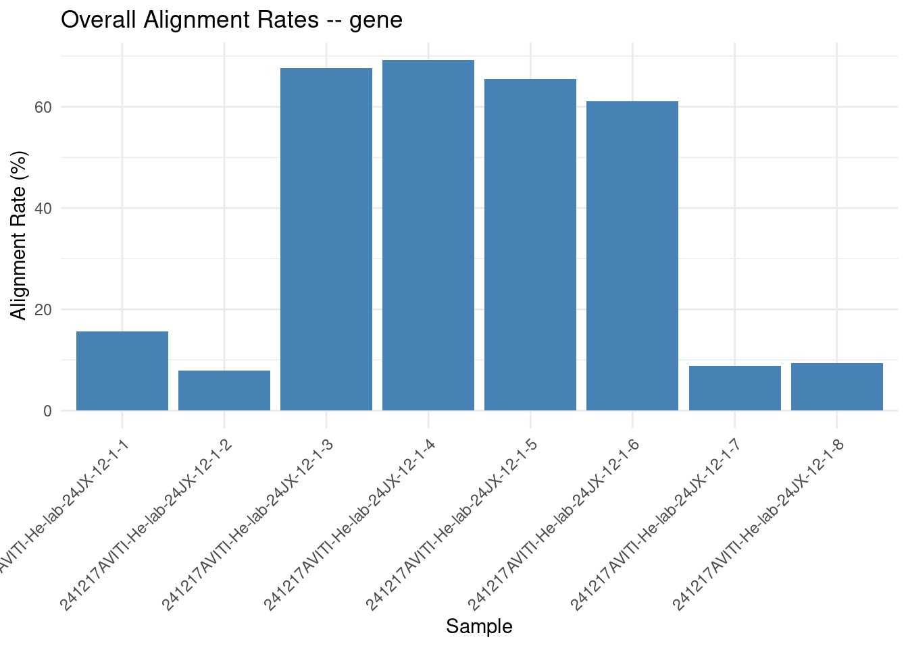
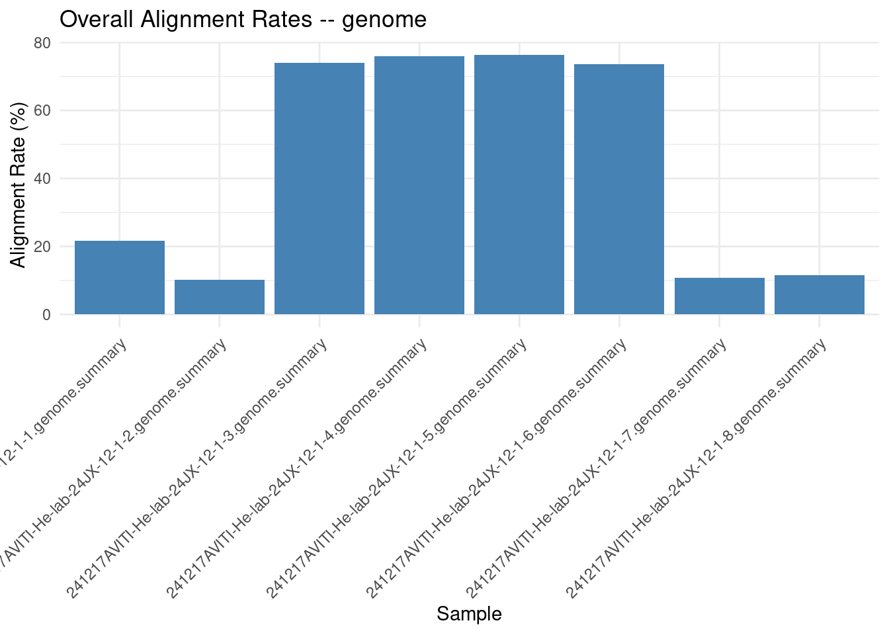
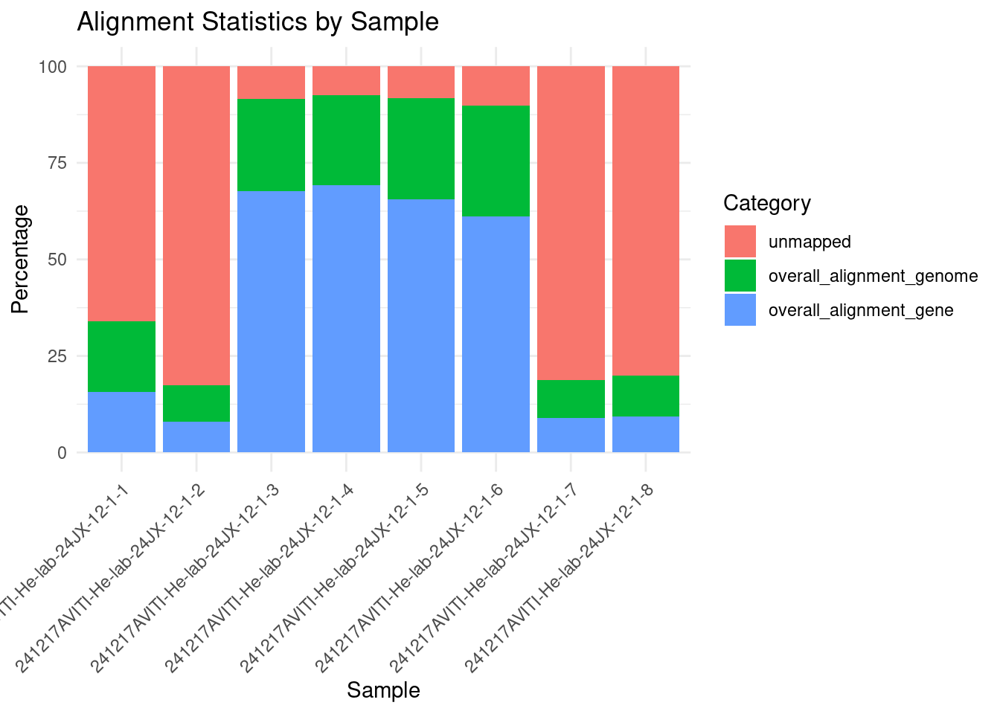

Last updated: 2025-02-27
Checks: 6 1
Knit directory: camseq-m6a/
This reproducible R Markdown analysis was created with workflowr (version 1.7.0). The Checks tab describes the reproducibility checks that were applied when the results were created. The Past versions tab lists the development history.
The R Markdown is untracked by Git. To know which version of the R
Markdown file created these results, you’ll want to first commit it to
the Git repo. If you’re still working on the analysis, you can ignore
this warning. When you’re finished, you can run
wflow_publish to commit the R Markdown file and build the
HTML.
Great job! The global environment was empty. Objects defined in the global environment can affect the analysis in your R Markdown file in unknown ways. For reproduciblity it’s best to always run the code in an empty environment.
The command set.seed(20250226) was run prior to running
the code in the R Markdown file. Setting a seed ensures that any results
that rely on randomness, e.g. subsampling or permutations, are
reproducible.
Great job! Recording the operating system, R version, and package versions is critical for reproducibility.
Nice! There were no cached chunks for this analysis, so you can be confident that you successfully produced the results during this run.
Great job! Using relative paths to the files within your workflowr project makes it easier to run your code on other machines.
Great! You are using Git for version control. Tracking code development and connecting the code version to the results is critical for reproducibility.
The results in this page were generated with repository version 4720c09. See the Past versions tab to see a history of the changes made to the R Markdown and HTML files.
Note that you need to be careful to ensure that all relevant files for
the analysis have been committed to Git prior to generating the results
(you can use wflow_publish or
wflow_git_commit). workflowr only checks the R Markdown
file, but you know if there are other scripts or data files that it
depends on. Below is the status of the Git repository when the results
were generated:
Untracked files:
Untracked: analysis/mapping.Rmd
Untracked: analysis/tool_ref.Rmd
Untracked: analysis/trimming.Rmd
Unstaged changes:
Modified: analysis/index.Rmd
Note that any generated files, e.g. HTML, png, CSS, etc., are not included in this status report because it is ok for generated content to have uncommitted changes.
There are no past versions. Publish this analysis with
wflow_publish() to start tracking its development.
library(ggplot2)
library(tidyr) # Step 1: Gene Mapping
/project/xinhe/xsun/software/hisat/hisat-3n/hisat-3n \
--index data_ref/gene_index/gene.hg38 \
-p 16 \
--summary-file "${REPORT_DIR}/${SAMPLE}.genes.summary" \
--new-summary \
-q \
-1 "${TRIMED_READS}/${SAMPLE}_R1.fq.gz" \
-2 "${TRIMED_READS}/${SAMPLE}_R2.fq.gz" \
--base-change A,G \
--directional-mapping \
$([ "$SPLICE_GENOME" = true ] && echo "--pen-noncansplice 20 --min-intronlen 20 --max-intronlen 20" || echo "--no-spliced-alignment") \
--avoid-pseudogene \
--no-softclip \
--np 0 \ # Sets the penalty for having an N (unknown base) in the read or reference. --np 0 means no penalty is applied for Ns
--rdg 5,3 \ # Sets the reference gap open and extension penalties.
--rfg 5,3 \ # Sets the read gap open and extension penalties. These penalties discourage alignments with gaps in the read. Higher values make it less likely for the aligner to introduce gaps in the read
--sp 9,3 \ # Sets the soft-clipping penalties.
--mp 3,1 \ # Sets the mismatch penalty. These penalties discourage mismatches in the alignment. Higher values make the aligner prefer matches over mismatches.
--score-min L,-3,-0.75 | # Sets the minimum score function for accepting an alignment.
samtools view -@ 16 -O BAM -o "${INTERMEDIATE_GENES_MAPPING_PE}/${SAMPLE}.bam"
# Step 2: Gene Alignment Filtering
samtools view \
-h \
-f 2 \
-F 4 \
-@ 16 \
-U "${INTERMEDIATE_GENES_UNMAPPED_PE}/${SAMPLE}.bam" \
"${INTERMEDIATE_GENES_MAPPING_PE}/${SAMPLE}.bam" \
| samtools sort \
-@ 16 \
-m 3G \
-O BAM \
-o "${INTERMEDIATE_GENES_BAM}/${SAMPLE}.bam"
echo "Gene Alignment Filtering done"
# Step 3: Extract Unmapped Reads
samtools fastq \
-1 "${INTERMEDIATE_GENES_UNMAPPED_PE}/${SAMPLE}_R1.fq.gz" \
-2 "${INTERMEDIATE_GENES_UNMAPPED_PE}/${SAMPLE}_R2.fq.gz" \
-n \
"${INTERMEDIATE_GENES_UNMAPPED_PE}/${SAMPLE}.bam"
echo "Extracting Unmapped Reads done"
echo "Finished processing sample: $SAMPLE"library(tidyverse)-- Attaching packages --------------------------------------- tidyverse 1.3.1 --v tibble 3.2.1 v dplyr 1.1.4
v readr 2.1.2 v stringr 1.5.1
v purrr 1.0.2 v forcats 0.5.1-- Conflicts ------------------------------------------ tidyverse_conflicts() --
x dplyr::filter() masks stats::filter()
x dplyr::lag() masks stats::lag()parse_hisat_summary <- function(file) {
content <- readLines(file)
# Extract metrics using regular expressions
metrics <- list(
sample = str_remove(basename(file), "\\.genes\\.summary$"),
total_pairs = as.numeric(str_extract(content[str_detect(content, "Total pairs")], "\\d+")),
aligned_0_pct = as.numeric(str_extract(content[str_detect(content, "Aligned concordantly or discordantly 0 time")], "\\d+\\.\\d+")),
aligned_1_pct = as.numeric(str_extract(content[str_detect(content, "Aligned concordantly 1 time")], "\\d+\\.\\d+")),
aligned_gt1_pct = as.numeric(str_extract(content[str_detect(content, "Aligned concordantly >1 times")], "\\d+\\.\\d+")),
aligned_discordant_pct = as.numeric(str_extract(content[str_detect(content, "Aligned discordantly 1 time")], "\\d+\\.\\d+")),
overall_alignment = as.numeric(str_extract(content[str_detect(content, "Overall alignment rate")], "\\d+\\.\\d+"))
)
return(as.data.frame(metrics))
}files <- list.files(pattern = "\\.genes\\.summary$", full.names = TRUE,path = "/project/xinhe/xsun/camseq/report_reads/mapping/")
# Combine all files into one data frame
alignment_stats_gene <- map_df(files, parse_hisat_summary)
ggplot(alignment_stats_gene, aes(x = sample, y = overall_alignment)) +
geom_col(fill = "steelblue") +
labs(title = "Overall Alignment Rates -- gene", y = "Alignment Rate (%)", x = "Sample") +
theme_minimal() +
theme(axis.text.x = element_text(angle = 45, hjust = 1))
files <- list.files(pattern = "\\.genome\\.summary$", full.names = TRUE,path = "/project/xinhe/xsun/camseq/report_reads/mapping/")
# Combine all files into one data frame
alignment_stats_genome <- map_df(files, parse_hisat_summary)
ggplot(alignment_stats_genome, aes(x = sample, y = overall_alignment)) +
geom_col(fill = "steelblue") +
labs(title = "Overall Alignment Rates -- genome", y = "Alignment Rate (%)", x = "Sample") +
theme_minimal() +
theme(axis.text.x = element_text(angle = 45, hjust = 1))
alignment_stats_gg <- data.frame(sample = gsub(x=alignment_stats_gene$sample,pattern = ".genome.summary",replacement = ""), overall_alignment_gene = alignment_stats_gene$overall_alignment,
overall_alignment_genome = alignment_stats_genome$overall_alignment)
alignment_stats_gg$overall_alignment_genome <- (100 - alignment_stats_gg$overall_alignment_gene)*alignment_stats_gg$overall_alignment_genome/100
alignment_stats_gg$unmapped <- 100 - (alignment_stats_gg$overall_alignment_genome + alignment_stats_gg$overall_alignment_gene)
alignment_stats_long <- pivot_longer(alignment_stats_gg,
cols = c(overall_alignment_gene, overall_alignment_genome, unmapped),
names_to = "category",
values_to = "value")
alignment_stats_long$category <- factor(alignment_stats_long$category,
levels = c("unmapped", "overall_alignment_genome", "overall_alignment_gene"))
ggplot(alignment_stats_long, aes(x = sample, y = value, fill = category)) +
geom_bar(stat = "identity") +
labs(title = "Alignment Statistics by Sample",
x = "Sample",
y = "Percentage",
fill = "Category") +
theme_minimal() +
theme(axis.text.x = element_text(angle = 45, hjust = 1))
sessionInfo()R version 4.2.0 (2022-04-22)
Platform: x86_64-pc-linux-gnu (64-bit)
Running under: CentOS Linux 7 (Core)
Matrix products: default
BLAS/LAPACK: /software/openblas-0.3.13-el7-x86_64/lib/libopenblas_haswellp-r0.3.13.so
locale:
[1] C
attached base packages:
[1] stats graphics grDevices utils datasets methods base
other attached packages:
[1] forcats_0.5.1 stringr_1.5.1 dplyr_1.1.4 purrr_1.0.2
[5] readr_2.1.2 tibble_3.2.1 tidyverse_1.3.1 tidyr_1.3.0
[9] ggplot2_3.5.1
loaded via a namespace (and not attached):
[1] Rcpp_1.0.12 lubridate_1.8.0 assertthat_0.2.1 rprojroot_2.0.3
[5] digest_0.6.29 utf8_1.2.2 R6_2.5.1 cellranger_1.1.0
[9] backports_1.4.1 reprex_2.0.1 evaluate_0.15 httr_1.4.3
[13] highr_0.9 pillar_1.9.0 rlang_1.1.2 readxl_1.4.0
[17] rstudioapi_0.13 jquerylib_0.1.4 rmarkdown_2.25 labeling_0.4.2
[21] munsell_0.5.0 broom_0.8.0 compiler_4.2.0 httpuv_1.6.5
[25] modelr_0.1.8 xfun_0.41 pkgconfig_2.0.3 htmltools_0.5.2
[29] tidyselect_1.2.0 workflowr_1.7.0 fansi_1.0.3 crayon_1.5.1
[33] tzdb_0.4.0 dbplyr_2.1.1 withr_2.5.0 later_1.3.0
[37] grid_4.2.0 jsonlite_1.8.0 gtable_0.3.0 lifecycle_1.0.4
[41] DBI_1.2.2 git2r_0.30.1 magrittr_2.0.3 scales_1.3.0
[45] cli_3.6.1 stringi_1.7.6 farver_2.1.0 fs_1.5.2
[49] promises_1.2.0.1 xml2_1.3.3 bslib_0.3.1 ellipsis_0.3.2
[53] generics_0.1.2 vctrs_0.6.5 tools_4.2.0 glue_1.6.2
[57] hms_1.1.1 fastmap_1.1.0 yaml_2.3.5 colorspace_2.0-3
[61] rvest_1.0.2 knitr_1.39 haven_2.5.0 sass_0.4.1